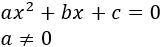

Ecuaciones de segundo grado
Como resolver ecuaciones de segundo grado completas
Las ecuaciones de segundo grado completas o ecuaciones cuadráticas son las que se representan de la siguiente forma: Donde a, b y c son las constantes de la ecuación:
- a es el número que va siempre delante de x al cuadrado.
- b es el número que va siempre delante de la x.
- c es el número.
Es decir, las ecuaciones de segundo grado completas son las que tienen término con x elevada a 2, término con x elevada a 1 (o simplemente la x). Si faltara alguno de estos términos, estaríamos hablando de ecuaciones de segundo grado incompletas, que se resuelven con otro procedimiento distinto. Al ser ecuaciones de segundo grado, tienen 2 soluciones. Las soluciones pueden se reales distintas, reales iguales, o complejas distintas (cuando las raices son imaginarias).
El primer paso para resolver ecuaciones de segundo grado completas es identificar las constantes correctamente. Como hemos dicho antes, las constantes son los números que van delante de x al cuadrado, x y el término que no lleva x. Vamos a verlo en un ejemplo:

En este caso, delante de x al cuadrado, no hay nada, por tanto a = 1. Delante de x hay un 5, por lo que b=5. Y el término que no lleva x es un 4, por lo que c=4. Una vez identificadas las constantes, para resolver las ecuaciones de segundo grado completas hay que aplicar la siguiente fórmula:

Si falta algun temino lo tomamos como un 0 y estas ecuaciones pueden tener 2 resultados iguales, distintos o imaginarios.
Ejemplos: